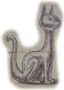
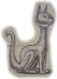

Piaski Świętości (ang. Sands of Sanctity) to jeden z pięciu artefaktów będących kluczami do Więzienia Demonów – Zzyzxu. Były ukryte w Baśnioborze, w Odwróconej Wieży. Artefakt ten posiada niezwykłą moc uzdrawiania wszelkich ran i chorób, nawet tych, które nie mają lekarstwa w znanym świecie.
 

Artefakt miał formę średniej wielkości, jasnego, miedzianego dzbanka przypominającego kota. Z jego ogona, ukształtowanego w dzióbek, wysypywał się złoty, połyskujący pył przypominający brokat. Pył ten, mający właściwości lecznicze, rozpraszał się po zetknięciu ze skórą, uzdrawiając wszelkie rany i choroby.